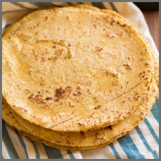

STREET TACOS

Street tacos are delicious, amazing, and oh so mouthwatering! Bite into tender steak, zesty lime flavor with a hint of spice and add on tomatoes, avocado, and onions for a savory bite you are going to love!
These street tacos are completely jam-packed with flavor and they are so easy to make. I love how the meat is so tender and juicy and only takes an hour to marinate! If you absolutely love tacos like me, try out these other amazing taco recipes! These taco-stuffed avocados, Baja fish tacos, and ground beef tacos will not disappoint!!
Details
- Prep Time: 10 minutes
- Cook Time: 10 minutes
- Total Time: 20 minutes
- Author Taco Cheesington
- Servings 6 Tacos
Ingredients
- Flank steak
- Soy Sauce
- Worcestershire sauce
- Lime
- Minced garlic
- Cilantro
- Chili powder
- Cumin
- Salt
- Pepper
- Corn tortillas
Directions
- Cut and mix: Cut the flank steak into one inch pieces. In a medium sized bowl add the soy sauce, Worcestershire, juice from one lime, cilantro, chili powder, cumin, and salt and pepper.
- Marinate: Add the steak and let marinate in the fridge for 1-2 hours.
- Cook the meat: Heat a medium sized skillet to medium high heat. Add the steak and marinade and cook for about 5-7 minutes or until no longer pink.
- Add toppings: Put the steak in the center of your tortilla with desired toppings.
Need Some Side Dishes?
-
Mexican Rice

Traditional recipe with a twist.
-
Salsa

Just the right amount of spice.
-
Guacamole

Fresh and healthy.
-
Tortillas
Easy to make and so good.